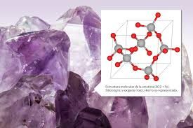
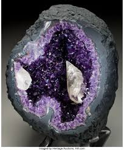
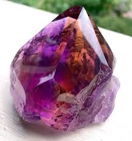

¿que son las amatistas?
La amatista es una variedad de cuarzo de color violeta, muy apreciada como piedra semipreciosa. Su tonalidad puede ir desde un lila claro hasta un morado profundo. A lo largo de la historia, ha sido considerada un símbolo de paz, equilibrio y protección espiritual.
forma y estructura de la amatista
forma
Los cristales de amatista suelen presentarse en prismas hexagonales con terminaciones piramidales.
Pueden ser pequeños cristales individuales o grandes geodas. La superficie es lisa y brillante en las caras cristalinas y áspera en la base donde se une a la roca.
A menudo se agrupan en racimos o geodas.
estructura
La amatista pertenece al sistema cristalino trigonal y es parte de la familia del cuarzo.
Su composición química es dióxido de silicio (SiO₂) con trazas de hierro que le dan el color violeta.
La transparencia puede variar de translúcida a casi transparente, y a veces presenta gradientes de color de violeta pálido a intenso.

formacion y origen
Las amatistas se forman dentro de geodas, que son cavidades huecas en rocas volcánicas o sedimentarias. Primero se forma una capa de minerales como cuarzo que recubre la cavidad

cristalizacion
Con el tiempo, el silicio y el oxígeno presentes en soluciones hidrotermales se combinan para formar cristales de cuarzo. Las trazas de hierro dentro de estos cristales, junto con la radiación natural de la roca, generan el color violeta característico.
crecimientos de cristales
Los cristales crecen desde las paredes de la cavidad hacia el centro, formando prismas hexagonales con puntas piramidales. Dependiendo del tiempo y las condiciones químicas, pueden formarse cristales más grandes o pequeños, y en algunos casos aparecen gradientes de color
propiedades fisicas
Dureza:
7 en la escala de Mohs
Brillo:
Vítreo
Color:
Violeta, desde lila claro hasta morado intenso
Transparencia:
Translúcida a transparente
Sistema cristalino:
Trigonal
Fractura:
Concoidea (similar al vidrio)
Composición química:
Dióxido de silicio (SiO₂) con trazas de hierro
tipos y variedades
Amatista de Siberia
Se considera de las más valiosas por su color violeta profundo con destellos rojizos y azulados.

Amatista de Uruguay
Presenta tonos muy intensos de violeta, casi púrpura, y suele encontrarse en grandes geodas.

Amatista de Brasil
Es una de las más comunes en el mercado, con colores que van de lila claro a violeta medio.

Ametrina
Variedad que combina amatista y citrino en el mismo cristal, mostrando zonas violetas y amarillas.
Amatista Rosa
Tonalidades suaves, cercanas al lila rosado, poco comunes y muy apreciadas en joyería.

usos
Joyería
La amatista se utiliza en anillos, collares, pulseras y aretes gracias a su belleza y resistencia.
Decoración
Se emplea en geodas, esferas y figuras talladas que adornan hogares y espacios de meditación.
Coleccionismo
Muy buscada por coleccionistas de minerales por su color y la variedad de formas en que aparece.
Usos energéticos y espirituales
En prácticas esotéricas, se considera una piedra que aporta calma, protección y equilibrio emocional.
Industria
Al ser una variedad de cuarzo, también puede emplearse en instrumentos científicos y tecnología, aunque en menor medida.
significado y creencias
Protección
Se cree que la amatista protege contra energías negativas y malas influencias externas.
Equilibrio emocional
Tradicionalmente se asocia con la calma, la serenidad y la reducción del estrés.
Sabiduría espiritual
Considerada una piedra que favorece la meditación, la conexión interior y la claridad mental.
Amor y amistad
En algunas culturas simboliza la fidelidad y lazos duraderos en las relaciones.
Nombre y origen
El nombre proviene del griego "amethystos", que significa "no ebrio", pues se pensaba que protegía contra la embriaguez.
historia
Antigüedad
Los griegos y romanos usaban la amatista en copas y amuletos, creyendo que prevenía la embriaguez.
Edad Media
Fue considerada una piedra sagrada en la Iglesia cristiana, usada en anillos de obispos y ornamentos religiosos.
Cultura egipcia
Los egipcios la empleaban en joyería y como piedra protectora en amuletos y tumbas.
Asia
En China y otras culturas orientales se asociaba con la claridad mental y la meditación.
Época moderna
Hoy en día, la amatista es una de las piedras semipreciosas más populares y accesibles en joyería y decoración.